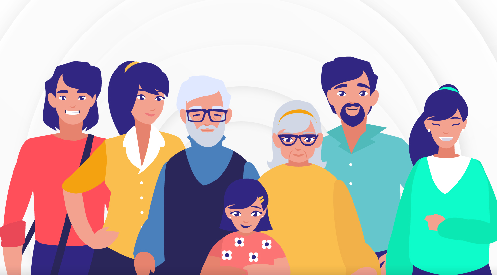

Introducción
La década de la contextualización del apoyo social fue un período marcado por un creciente interés en las dinámicas sociales y el bienestar colectivo. es una revisión histórica de los conceptos de "apoyo social" y "redes de apoyo social" desde los años 80 hasta principios del siglo XXI, destacando cómo estas nociones han sido definidas y re-definidas por diversos autores a lo largo del tiempo.
En la década de los 80, el apoyo social se describía principalmente como interacciones entre individuos que ofrecen ayuda emocional, instrumental o informativa. Las redes de apoyo social se veían como relaciones que proporcionaban asistencia real o un sentido de pertenencia a una comunidad.
Durante los años 90, el concepto se amplió para incluir una estructura más compleja de redes, describiendo estas redes como círculos concéntricos que incluyen diferentes tipos de relaciones, desde familiares hasta amigos y compañeros de trabajo. Se hizo una distinción entre el apoyo social percibido de manera subjetiva y las estructuras objetivas que componen las redes de apoyo.
En la primera década del 2000, se reconoció la importancia del apoyo social en el contexto de la salud, describiéndolo como un factor clave en el manejo del estrés y en la promoción del bienestar general. Se continuó explorando la naturaleza multidimensional del apoyo social, incluyendo tanto las provisiones emocionales como las instrumentales ofrecidas por la comunidad.
En resumen, el texto muestra cómo las definiciones y comprensiones del apoyo social y las redes de apoyo han evolucionado, destacando su complejidad y su papel crucial en la salud y el bienestar de los individuos.
Cambios Sociales y Culturales
Durante esta década, se observaron importantes cambios en las estructuras sociales y culturales, destacándoseha provocado cambios significativos en los aspectos sociales y culturales de la sociedad. Uno de los cambios más notables es la transformación en la percepción y aceptación de la búsqueda de apoyo emocional y social.En el pasado, buscar ayuda o expresar necesidades emocionales podía ser visto como un signo de debilidad o dependencia, y a menudo se estigmatizaba. Sin embargo, los avances en la investigación sobre el apoyo social han ayudado a cambiar esta perspectiva. A medida que se ha demostrado la importancia del apoyo social para el bienestar y la salud, la sociedad ha comenzado a reconocer que el buscar ayuda y mantener redes de apoyo no solo es saludable, sino esencial para una vida equilibrada.Este cambio cultural ha llevado a una mayor apertura y normalización de las conversaciones sobre salud mental y apoyo emocional. Las personas ahora se sienten más cómodas buscando y ofreciendo apoyo, y las organizaciones y gobiernos han promovido iniciativas que fomentan estas redes de apoyo. Por ejemplo, se han desarrollado campañas de concienciación para reducir el estigma asociado con el buscar ayuda y se han creado programas comunitarios para fortalecer los lazos sociales.Este cambio en la percepción también ha influido en cómo las comunidades organizan su apoyo y asistencia. Las redes de apoyo se han convertido en una parte integral de las estrategias de intervención social y de salud pública, reflejando un entendimiento más profundo de la interconexión entre el bienestar individual y el apoyo social. Así, la cultura de la solidaridad y el apoyo mutuo ha ganado terreno, reflejando una sociedad más consciente y empática hacia las necesidades emocionales y sociales de sus miembros.
Impacto en la Sociedad
El impacto del apoyo social en la sociedad fue significativo, reflejándose en diversas áreas como El estudio y la comprensión del apoyo social y las redes de apoyo han tenido un impacto significativo en la sociedad en varias áreas clave. En primer lugar, la investigación ha demostrado que el apoyo social es esencial para la salud mental y física, actuando como un amortiguador contra el estrés y promoviendo una mejor salud en general. Esto ha llevado a un mayor enfoque en la promoción del bienestar mental y a la integración de estrategias de apoyo social en el cuidado de la salud.Además, el reconocimiento de la importancia del apoyo social ha influido en las políticas de salud pública, resultando en la implementación de programas y servicios que fortalecen las redes comunitarias y mejoran el acceso a servicios de salud mental. Los estudios también han impulsado el desarrollo de intervenciones psicosociales que se centran en fortalecer las relaciones interpersonales, como grupos de apoyo y programas de asesoramiento, lo que ha ayudado a las personas a enfrentar desafíos y mejorar su calidad de vida.El impacto de estos estudios se extiende a un enfoque preventivo en el manejo del estrés y la promoción de la salud, destacando la importancia de las relaciones sociales saludables en la prevención de enfermedades y en la promoción de una vida equilibrada. Culturalmente, la valorización del apoyo social ha fomentado una mayor apreciación de la comunidad, la empatía y el apoyo mutuo en la vida cotidiana.
Conclusión
la década de la contextualización del apoyo social dejó un legado importante en términos de Los avances en la definición y estudio de estas redes destacan su rol fundamental en la adaptación y manejo del estrés, así como en la mejora de la calidad de vida. La evolución conceptual ha llevado a una apreciación más profunda de cómo las relaciones interpersonales y las conexiones sociales no solo proporcionan apoyo en momentos críticos, sino que también contribuyen a un sentido duradero de pertenencia y seguridad. En definitiva, el entendimiento moderno del apoyo social subraya su importancia integral en la salud y el bienestar, reafirmando la relevancia de fortalecer y mantener redes de apoyo sólidas."